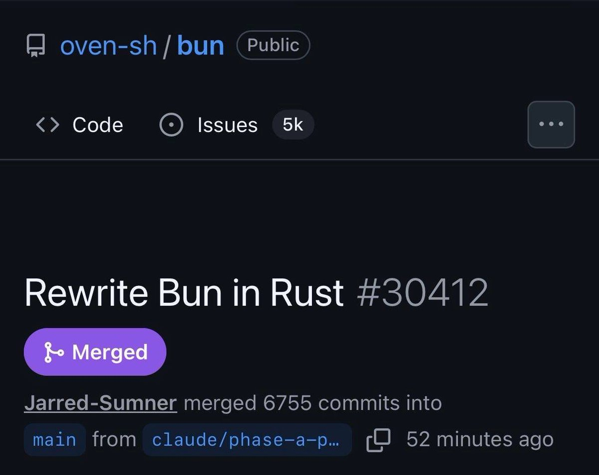
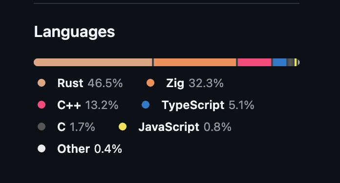

@SjLwrO14y68R3Dw 收购了几个月啥也没干就弄出这么一坨大粪，今天也是辱骂Bun辱骂Anthropic的一天😇



此恨绵绵无绝期，我坚持认为虽然Rust有很多闪闪发光的好处，但单凭“没有隐式控制流，没有隐式内存分配，没有预处理器，也没有宏”的特性（摘自官网，但有强大的编译期执行），Zig就是绝对比Rust更优越的语言，哪怕剩下的部分再丑或者怎么了，可是至少干净，而这么改纯粹是跑去用下位替代了。 https://t.co/RlD4QTaMdF